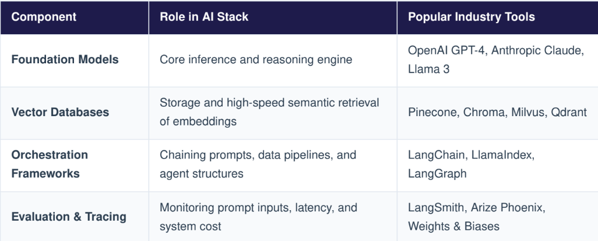

AI Engineering Course
AI Engineering is an emerging discipline focused on the tools, systems, and methodologies required to operationalize artificial intelligence models into reliable, scalable, and secure enterprise applications. Unlike pure data science research, AI engineering treats intelligence as a software component.
- AI Engineer:Focuses on model integration, prompt engineering, retrieval-augmented generation (RAG) architectures, system optimization, api orchestration, and deploying foundation models at enterprise scale.
- Data Scientist: Focuses on statistical research, exploratory data analysis, designing model architectures, and training custom algorithms on static datasets.
The Engineering Paradigm Shift
With the rise of foundational Large Language Models (LLMs), AI development has transitioned from "training models from scratch" to "orchestrating and modifying pre-trained models via contextual software design."
Building reliable applications with foundational models requires overcoming issues like factual hallucinations, outdated dynamic knowledge bounds, and lack of systemic memory.
RAG extends the baseline knowledge base of an LLM by querying external data components before executing inference pipelines. This architecture consists of three core structural steps:
- Ingestion : Documents are partitioned into small text chunks, passed through an embedding model to generate numerical vectors, and indexed into a vector database.
- Retrieval : At runtime, a user's prompt is vectorized to perform a semantic similarity search within the vector database to fetch relevant text chunks.
- Generations : The retrieved document chunks are appended alongside the original user prompt into the context window of the LLM, prompting an accurate, grounded response.
2. Core Infrastructure Taxonomy

The code sample below demonstrates an enterprise orchestration design pattern leveraging a model API combined with structural parameters to run safe, context-guided inference loops.
# Prototype Implementation of an AI Engineering Agent Endpoint Loop
import os
import openai
class ConversationalAIEngine:
def __init__(self, api_key: str, model_name: str = "gpt-4-turbo"):
self.client = openai.OpenAI(api_key=api_key)
self.model = model_name
def execute_grounded_inference(self, user_query: str, retrieved_context: str) -> str:
# Construct explicit system prompt boundaries to avoid model hallucinations
system_instructions = (
"You are an enterprise AI engineering assistant. Answer the user's question "
"strictly using the provided context. If the answer cannot be verified "
"from the context, state that the information is unavailable."
)
# Structure the contextual execution payload
user_payload = f"Context: {retrieved_context} Question: {user_query}"
response = self.client.chat.completions.create(
model=self.model,
temperature=0.2, # Low variance to enforce deterministic responses
messages=[
{"role": "system", "content": system_instructions},
{"role": "user", "content": user_payload}
]
)
return response.choices[0].message.content
# Usage Example (Conceptual Layout)
# ai_engine = ConversationalAIEngine(api_key="your-enterprise-api-token")
# context = "Product Alpha patch notes v2.6 explicitly fixed database connection timeout errors."
# print(ai_engine.execute_grounded_inference("What fixed the timeout errors?", context))
Or you can download the Pdf files here.